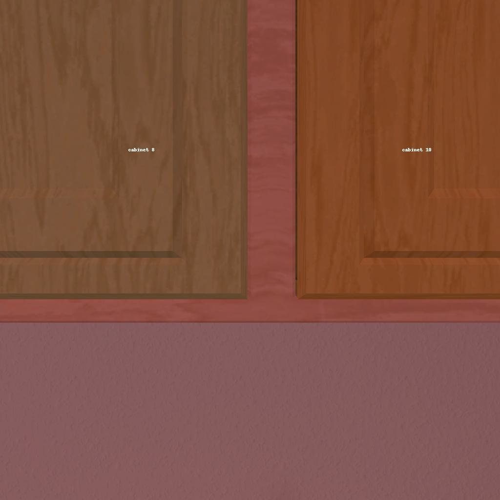

---------------------------------------------------------task: 23---------------------------------------------------------
--------------------------------------------------------------------------------------------------------------------------------------------------------------------
--------------------------------------------------------------------------------------------------------------------------------------------------------------------
Step:--------------------------------------------------------------------------8-------------------------------------------------------------------------------
----------------------------------------
VLM Prompt:
Image1:
Image2:
Image3:
**Instruction**
1. Analyze the provided image to identify all visible household objects, focusing on those relevant to the task description "heat some mug and put it in coffeemachine."
2. Use the analysis of the image and the task hint "The agent must find an object of the desired type, pick it up, go to a microwave, heat the object with the microwave, then find the correct location to place it, and put it down there. The agent does not need to use the microwave button or open the microwave to heat the object, and the agent just needs to do action that is "heat the object with the microwave"." to answer the question: what is the most reasonable action in the choices for the task description "heat some mug and put it in coffeemachine"?
4. Decide and write the answer using the template: The answer is: (i): , where i is the real number. If there is no desired object in the image, search every place based on **Initial Observation** to find the object. And if no one is exactly correct, choose a similar answer.
**Initial Observation**
You are in the middle of a room. Looking quickly around you, you can see cabinet (1-15), fridge (1), countertop (1-4), drawer (1-4), microwave (1), toaster (1), coffeemachine (1), garbagecan (1), sink (1), stoveburner (1-3), sinkbasin (1)
**Answer Choices**
(1): go to cabinet 3
(2): go to fridge 1
(3): go to countertop 1
(4): go to cabinet 4
(5): go to cabinet 5
(6): go to cabinet 6
(7): go to cabinet 7
(8): go to drawer 1
(9): go to drawer 2
(10): go to drawer 3
(11): go to cabinet 9
(12): go to cabinet 10
(13): go to drawer 4
(14): go to microwave 1
(15): go to cabinet 11
(16): go to toaster 1
(17): go to cabinet 12
(18): go to cabinet 13
(19): go to cabinet 14
(20): go to cabinet 15
(21): go to countertop 2
(22): go to coffeemachine 1
(23): go to garbagecan 1
(24): go to countertop 3
(25): go to countertop 4
(26): go to sink 1
(27): go to stoveburner 1
(28): go to stoveburner 2
(29): go to stoveburner 3
(30): go to sinkbasin 1
(31): open cabinet 8
(32): close cabinet 8
(33): examine cabinet 8
**Answer**
Let's think step by step by following the instructions.
----------------------------------------
----------------------------------------
Original Response:
First, we need to find a mug to heat in the microwave. Mugs are typically found in cabinets or on countertops near coffeemachines. Looking at the provided images, we don't see any visible mugs on the countertops (Image1, Image2, Image3), so we can eliminate answer choices (3), (21), (24), (25).
Next, we need to go to a location where mugs are likely to be stored, which would be the cabinets. Since we have multiple cabinet options, we should consider those closest to the coffeemachine for efficiency. Unfortunately, the images provided do not show the location of the coffeemachine, so we cannot determine which cabinet is closest based on the images alone.
However, based on the Initial Observation, we know there is only one coffeemachine, so we can assume it is likely to be near the center of the kitchen setup. Thus, we should choose a cabinet that is central but not already shown in the images, as those cabinets (cabinet 2, 3, and 1 in Image1; cabinet 1 in Image2; cabinet 8 and 10 in Image3) do not contain mugs visibly.
Considering this, the most reasonable action would be to check another cabinet that is not shown in the images provided. Cabinet 4, 5, 6, 7, 9, 11, 12, 13, 14, and 15 are all potential options. But since we don't have any specific information to narrow it down further, we should choose one of these at random.
The answer is: (4): go to cabinet 4
----------------------------------------
----------------------------------------
>>> Refine Original VLM Response and Get Pure Action: go to cabinet 4
----------------------------------------
-----------------------------------------------------------------
Running time: 13.86705470085144 seconds
Total Money: 14.805720000000006
-----------------------------------------------------------------
-----------------------------------------------------------------
Text Observation:You arrive at loc 5. The cabinet 4 is closed.
-----------------------------------------------------------------
UNSUCCEED